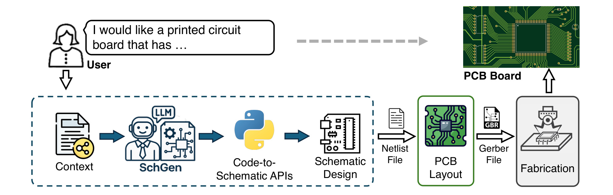
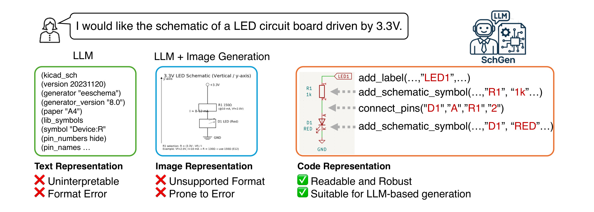
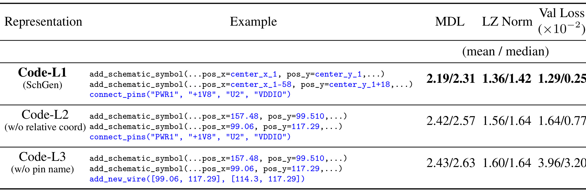
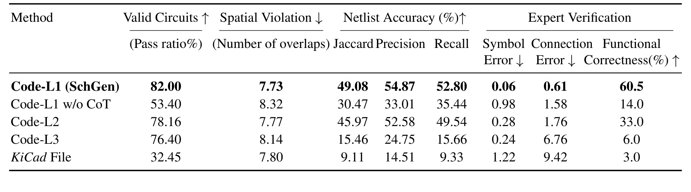
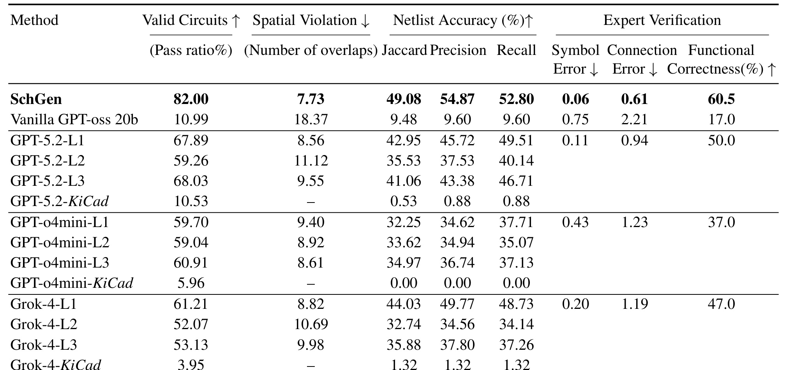
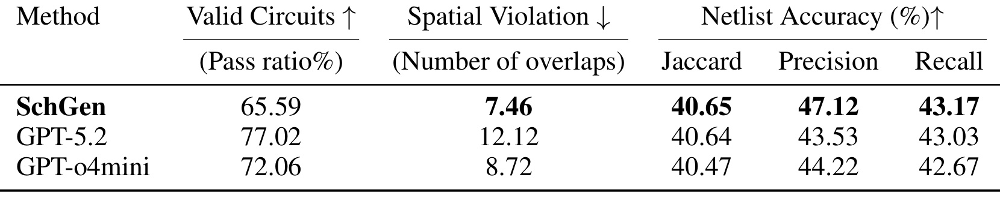
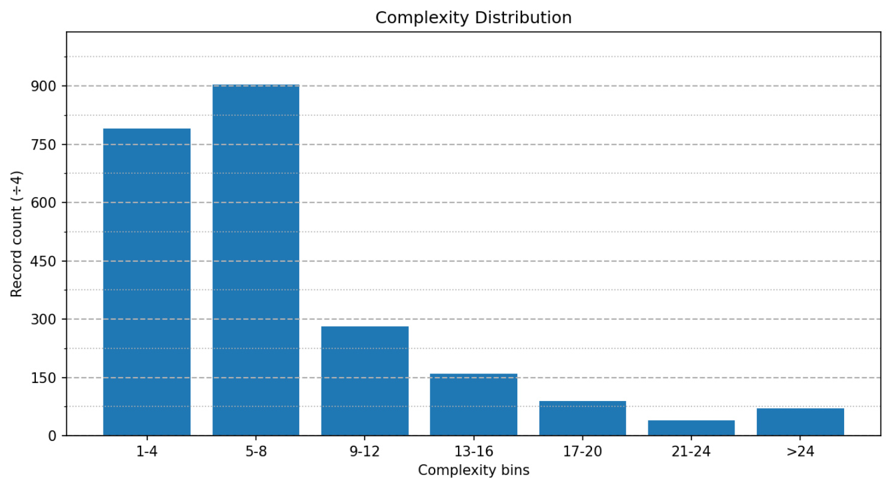
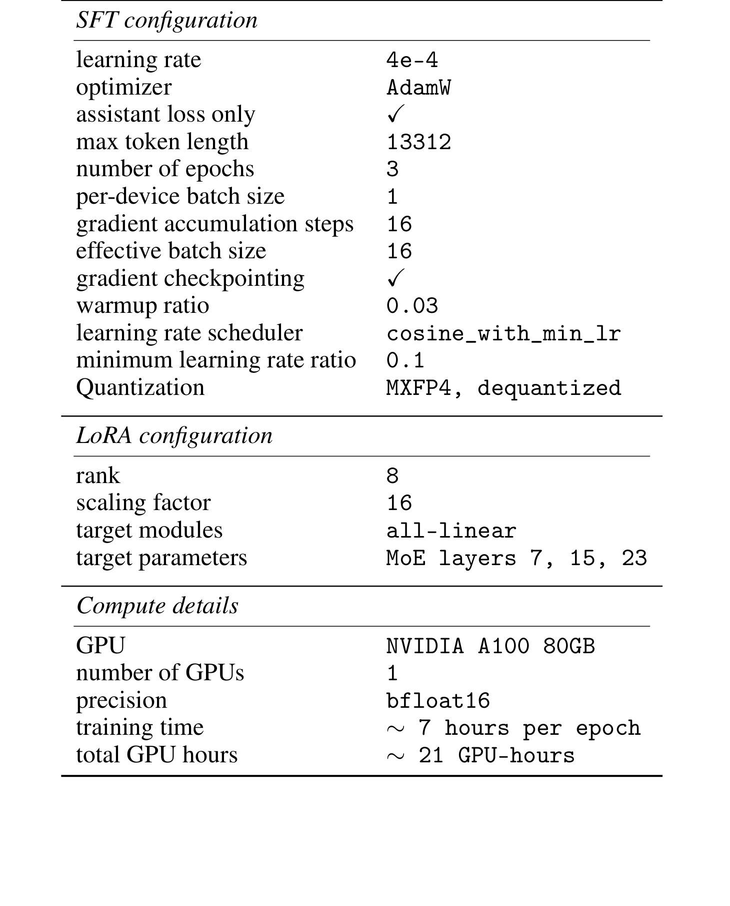
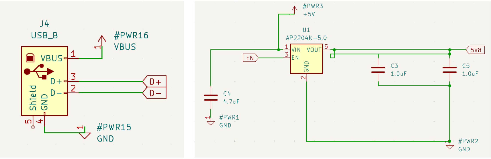

SchGen 讨论的是一个此前在大模型硬件生成里相对空白的任务：用户用自然语言描述想要的电路板功能，模型直接生成可编辑的 PCB schematic，而不是只给电路思路、图片草稿、Verilog 或不可落地的 netlist。论文入口是 arXiv:2605.30345。一作 Qinpei Luo 来自 University of California, San Diego，合作机构包括 Microsoft Research Asia、University of California, San Diego 和 The University of Texas at Austin；论文首页给出的代码仓库为 microsoft/SchGen，本轮已核验 GitHub 页面可访问。
这篇论文的关键不是把一个更大的通用模型直接塞进 EDA 工具，而是重新设计 PCB schematic 的文本表示。作者认为，raw KiCad 文件太冗长、太工具版本相关；图片生成不能被 EDA 工具编辑；普通坐标式代码又把任务变成脆弱的几何预测。SchGen 的做法是用语义扎根的 Python 编辑原语表达原理图：组件放置用相对坐标，连线用 pin name，最后把代码编译回 KiCad schematic。这个选择把“画图”转成更适合 LLM 学习的“按工程语义匹配组件和引脚”。
1. 背景和问题
PCB schematic 是电路板设计链路里非常靠前但决定性很强的一步。一个工程师从用户需求出发，先选芯片、连接器、电阻、电容、电源符号和 net label，再把每个 symbol 放到可读的位置，最后把具体引脚连成电气网络。这个 schematic 导出的 netlist 会继续进入 PCB layout、走线、Gerber 文件和制造环节。换句话说，schematic 既是工程师理解系统架构的图形界面，也是下游布局和制造的结构化输入。它错了，后面的布局和制板即使自动化程度再高也只能沿着错误连接继续走。

Figure 1 把本文任务放在完整硬件流程里：用户的自然语言请求和上下文进入 SchGen，SchGen 生成一段 code-to-schematic API 代码，代码被转换为 schematic design，再导出 netlist，进入 PCB layout、Gerber file 和 fabrication。这里最重要的信息是输出不是“建议买什么芯片”或“画一张电路图图片”，而是 EDA 工具可以继续编辑、检查和导出 netlist 的 schematic。图里 SchGen 被放在用户需求和 schematic 之间，说明它试图替代或辅助的是原理图绘制阶段，而不是 layout/routing 阶段。对硬件设计而言，这个定位很关键，因为原理图负责定义功能和连接关系，layout 只是把这些关系落到物理板面上。
此前生成式 AI 在硬件设计里已经有几条比较成熟的路线。数字 IC 可以用 Verilog、VHDL 这类层次化硬件描述语言表达布尔逻辑；模拟 IC 可以把拓扑建成图结构，再做图生成或代码生成；机械 CAD 也可以把模型变成可参数化操作序列。但 PCB schematic 不属于这些范式。它同时包含数字芯片、模拟芯片、无源器件、连接器、电源符号、测试点、跳线、标签和大量异构引脚。用户的请求往往是高层功能性的，例如“给我一个 1.8V regulated supply，并带 LED 指示和测试点”，而不是严格列出每条 net。模型既要理解功能意图，又要知道器件之间的典型连接关系，还要给出人能读懂的空间布局。
论文指出的第一个瓶颈是表示。KiCad schematic 文件虽然是文本，但里面包含大量版本、纸张、库符号、UUID、坐标、样式和工具元数据。LLM 若直接生成 raw schematic，很容易在括号、字段、版本细节或对象引用上出错，导致 EDA 工具无法解析。图片生成看起来更接近人类看到的原理图，但它不是 machine-readable，也不能直接成为可编辑 schematic；如果再从图片识别回 netlist，又引入新的识别误差。简单的代码表示也未必够好，如果要求模型直接预测绝对坐标和 wire segment，它仍然需要同时解决几何布局和电气连接，错误会集中出现在错位、重叠、引脚未接、wire 交叉是否连通等细节上。
第二个瓶颈是数据。公开硬件项目很多，但格式非常混杂：有些是 KiCad，有些是 Altium/EAGLE，有些只发布 PDF 或图片；同一工具的版本也可能变化。论文采用 SparkFun 等开放硬件资源作为参考，最终构造 2105 个 KiCad schematics、1390 个 unique designs，并把样本扩增到 8420 条训练数据。这个规模相对 NLP 很小，但对可编辑 PCB schematic 生成已经是一个明确的数据集贡献。问题在于，这些数据不是天然就带有“用户请求 -> schematic code”的监督对，需要从在线图片/设计文件中恢复 schematic，再合成不同风格的用户请求。
因此 SchGen 的问题定义可以概括为：给定自然语言功能请求，生成能被 KiCad 打开和编辑的 schematic code；这个 code 执行后要得到有效电路、较少空间重叠、较高 netlist accuracy，并在专家检查下满足功能意图。它跟普通 LLM code generation 的差别在于，语法正确只是第一道门槛。函数调用能跑通并不代表电气连接正确；net label 相同才算连接、pin name 对不上会导致错误 net；空间上重叠太多会让工程师无法读图；即使 ERC 没有 critical error，功能也可能不符合用户需求。论文把这些约束拆进 validity、spatial violation、netlist accuracy 和 expert verification 四类评价里，是比较合理的。
从大模型角度看，这篇论文也提供了一个值得关注的判断：在高度工具化、强结构、强领域约束的生成任务里，representation design 可能比模型尺寸更关键。SchGen 最终微调的是 GPT-oss-20B，但它在主测试集上超过了按同一 API 提示的更大 frontier LLM。这个结论不应被理解为“小模型总能打败大模型”，而应理解为：如果输出空间被设计成接近专家真实编辑动作，且把几何细节改写成语义引用，模型需要学习的条件分布会大幅简化。对 PCB schematic 这种既要可编辑又要电气正确的任务，单纯扩大模型或换成图像输出都不能绕开表示问题。
2. 方法
2.1 把 PCB schematic 生成变成可编辑代码生成
SchGen 的第一步是重新界定输出对象。论文没有让模型直接输出 KiCad 的 s-expression 文件，也没有输出 schematic 图片，而是输出一组 Python 风格的 schematic editing operations。这组 operation 的目标是贴近工程师在 EDA GUI 里画图的过程：先放核心 symbol，再围绕核心 symbol 放外围器件和标签，然后按引脚语义连线，最后写出所有 wire。这样做的好处是，模型生成的是一段可检查、可执行、可转换的程序；程序执行后才得到 KiCad schematic 文件。中间代码既压缩了 raw KiCad 的工具元数据，也保留了 schematic 作为可编辑工程对象的性质。
论文把 schematic 中的对象简化为三类：component symbols、power symbols 和 net labels。Component symbols 对应芯片、电阻、电容、连接器等物理元件；power symbols 表示 VCC、GND、+1V8 等电源轨；net labels 表示具名网络，相同 label 在 schematic 中会被视为电气连接。每个 component symbol 有一个或多个 pins，pin 既可以用数字 ID，也可以用简洁名称，例如 VCC、GND、GPIO1、TXD。这个抽象很重要，因为 PCB schematic 的正确性并不只来自“线段画到了某个坐标”，而来自“哪个组件的哪个功能引脚被接到了哪个网络”。
从任务流程看，用户请求首先被模型理解为功能模块和元件需求。例如请求中如果出现“AP2112K-1.8 LDO、VIN 输入、+1V8 输出、enable tied to VIN、LED indicator with solder jumper”，模型需要知道 regulator 的 VIN/VOUT/EN/GND/NC 引脚含义，知道输入电容应该从 VIN 到 GND，知道 LED 指示路径应从电源经 LED、电阻、跳线到 GND。SchGen 不直接让模型把这些关系画成二维线段，而是让模型调用 connect_pins("U1", "VOUT", "#PWR_1V1", "+1V8") 这类语义连接。这样，输出中的“连接意图”比 wire 坐标更显式。
这种 code-to-schematic 设计也给了训练和评估一个中间抓手。生成代码如果调用了不存在的 symbol reference、pin name 或非法参数，会在执行阶段抛错；生成的 schematic 如果违反 KiCad ERC，会被 valid circuit 指标捕捉；生成的 netlist 可以与 ground truth 做集合比较。相比直接评价图片像不像，代码路径让错误更可定位：是 symbol 选错、相对位置错、pin 名错、net label 错，还是 wire routing 造成空间重叠。论文没有把 SchGen 做成多轮 agent，而是用监督微调学习一次性生成，这也让表示本身的作用更容易被消融验证。
2.2 语义扎根代码表示：编辑原语、相对坐标和 pin-name wiring
论文定义的核心 API 有五个：add_schematic_symbol、add_label、get_pin_location、connect_pins 和 write_out_all_wires。add_schematic_symbol 从 symbol library 中选择元件并放到指定位置，同时设置 reference、value、rotation 和 mirror；add_label 在指定位置放 net label，并设置 label 文本、reference、类型和方向；get_pin_location 根据 symbol reference 和 pin name 查询引脚位置；connect_pins 根据两个 symbol/pin 对建立连线；write_out_all_wires 把积累的连接写回 KiCad schematic，并做基本自动布线。这个 API 集合刻意不暴露 raw KiCad 文件的全部细节，而是暴露 schematic 编辑中对功能最关键的动作。

Figure 2 展示了论文对表示空间的判断。左侧 raw text representation 直接面对 KiCad 文件中的版本号、generator、paper、lib_symbols、pin_names 等冗长内容，模型容易生成不可解释或格式错误的文本。中间 image representation 可以看起来像电路图，但它不被 EDA 工具支持，且符号和连线容易失真。右侧 code representation 把任务压到 add_label、add_schematic_symbol 和 connect_pins 这类操作上，图中强调 readable、robust 和 suitable for LLM-based generation。这里的“semantic-grounded”并不是抽象口号，而是把连接关系绑定到 LED1、R1、D1 这些 reference 和 A、K、2 这类 pin name 上，使模型预测的单位更接近工程语义。
SchGen 的表示有三个层级，用来做消融。Code-L1 是论文提出的完整表示，也就是 SchGen 使用的版本：symbol placement 使用相对于 anchor 的 local coordinate，wire connection 使用 pin-name-based connect_pins。Code-L2 去掉相对坐标，使用绝对坐标，但仍然保留 pin-name connectivity。Code-L3 进一步去掉 pin-name connectivity，用 add_new_wire([x1,y1],[x2,y2]) 这类绝对坐标 wire segment 画线。三者的区别不是简单语法差异，而是逐步把任务从“语义编辑”退回到“几何预测”。

Table 1 同时给了代码示例和表示复杂度指标。Code-L1 里第二个元件的位置写成 center_x_1-58、center_y_1+18 这类相对表达，连线写成 connect_pins("PWR1", "+1V8", "U2", "VDDIO")；Code-L2 改用绝对坐标，但还保留 connect_pins；Code-L3 则把连线也改成 add_new_wire 的绝对点到点连接。指标上，Code-L1 的 MDL mean/median 为 2.19/2.31，低于 Code-L2 的 2.42/2.57 和 Code-L3 的 2.43/2.63；LZ Norm 也是 Code-L1 最低；Val Loss 的 mean/median 则从 Code-L1 的 1.29/0.25 上升到 Code-L2 的 1.64/0.77 和 Code-L3 的 3.96/3.20。这个表说明，语义化表示不仅让人读起来更接近工程过程，也让序列更可压缩、更容易被模型学习。
从这张表还可以看出，作者并没有把 API 抽象停留在“减少 token”这个层面。Code-L1 的相对坐标让同一类局部拓扑在不同页面位置上共享模式，pin-name connection 让连接语句不再依赖 wire 端点落在哪个几何坐标。对模型而言，这相当于把训练目标拆成两个较稳定的子问题：先根据功能语义决定哪些 symbol 和 pin 应该相连，再根据 anchor 和局部 offset 生成可读布局。若未来要把 SchGen 扩展到多页 schematic 或更复杂模块，这种层级化表达也更容易继续扩展，例如先生成模块级中心 symbol，再生成模块内部外围器件和跨模块 label，而不是在一个全局二维坐标系里一次性预测所有对象。
论文用于解释表示复杂度的第一个公式是 Minimum Description Length：
符号解释：compressed_bytes 是对表示序列做无损压缩后的字节数，raw_bytes 是原始表示序列字节数，乘以 8 后把比例转换为近似 bits-per-byte。这个指标在论文里不是用来评价电路功能，而是用作表示复杂度代理。若一种表示有更多重复结构、更少冗余字段、更符合局部规律，压缩器就能更有效地压缩它，MDL 会更低。Code-L1 的 MDL 最低，说明相对坐标和 pin-name connectivity 让生成序列更结构化。
第二个公式是归一化 Lempel-Ziv complexity：
符号解释：n 是序列长度，c(n) 是增量解析得到的 phrase 数量，LZ_{norm} 越低表示序列内在复杂度越低。这个指标和 MDL 互补：MDL 看压缩后的体积，LZ Norm 看序列中新模式出现的频率。Code-L1 的 LZ Norm 低于另外两个变体，直观上是因为相对坐标减少了任意绝对数值的分散性，pin name 连接减少了任意 wire segment 组合的分散性。对 LLM 来说，这意味着 token 序列中更多模式能被复用，训练损失自然更容易下降。
相对坐标解决的是 schematic 布局中的局部结构问题。工程师通常不会先在全局坐标系里想“电容的 x=100.33、y=99.51”，而是先确定一个中心芯片，再把输入电容放在 VIN 附近，把输出电容或 test point 放在 VOUT 附近，把 GND 放在下方。Code-L1 用 center_x_1 + offset 的方式表达这种局部关系，模型学习的是“某类外围元件相对中心元件应该在哪里”，而不是“整个页面上某个绝对点的坐标”。当 schematic 规模变大、模块重复出现时，这种局部坐标更容易迁移。
Pin-name wiring 解决的是电气语义问题。一个 wire segment 的两个端点坐标本身并不告诉模型它为什么合理；而 connect_pins("D1", "A", "R1", "2") 明确表达 LED 的阳极接到电阻某端。对 PCB schematic，连接错误往往比轻微布局不美观更致命。论文后面的消融显示，去掉 pin-name connectivity 的 Code-L3 在 netlist accuracy 上大幅下降，connection error 明显上升。这符合直觉：wire 坐标要同时预测“连到哪里”和“怎么走过去”，pin-name connection 则把“连到哪里”显式化，自动布线再处理“怎么走过去”。
2.3 数据构造：agentic sketch、人类对齐、schematic-to-code conversion
SchGen 还需要训练数据。论文的数据来源不是现成的“自然语言请求-代码”对，而是在线开源 PCB 设计资源。多数在线硬件设计只提供原理图图片、PDF 或不同工具格式，直接训练会遇到格式不统一和解析困难。作者提出一个 agent-human collaborative pipeline：先从在线设计获取 schematic image，再让多模态 LLM 调用代码 API 生成 sketch schematic，执行代码并根据 error/warning 反馈迭代；随后由人类工程师修正复杂连线和对齐问题；最后把对齐后的 KiCad schematic 转换成代码表示，形成训练集。
Figure 3 展示了这条数据流水线。左侧 online open designs 进入 agentic sketch 模块，LLM 基于 schematic editing APIs 生成代码，code-to-schematic APIs 将代码编译成 sketched schematic，并把 error/warning 反馈回生成端。中间 human alignment 负责把草图修正成与参考设计一致的 aligned schematic。右侧 code conversion 再把 aligned schematic 转成代码数据集。这个流程的关键在于，LLM 不是直接当最终标注者，而是先生成可执行草图；人类工程师的工作也不是从零画图，而是校正 LLM 草图中的复杂连接错误。论文称 agentic sketch 在 5 轮以内可以准确复现 KiCad symbol，平均每个 schematic 的验证和潜在修正少于 20 秒，而从零手工绘制可能超过 5 分钟。
Agentic sketch 主要解决“从图片到可编辑 schematic 初稿”的问题。多模态 LLM 看到参考图，生成调用 Section 3.1 API 的 Python 代码；如果代码语法错误、symbol 不存在、参数非法，执行阶段会给出错误或 warning，模型据此迭代。这个阶段能把图片中可见的 symbol 和大致布局转成 KiCad 对象，但作者也承认多模态 LLM 会在复杂 wire connection 上犯错，例如难以判断两条线是连接还是仅仅交叉。这里引入人工对齐是合理的，因为 schematic 数据的价值主要在电气连接正确，而不是视觉上大致相似。
Schematic-to-code conversion 则反过来把对齐后的 KiCad 文件解析成 SchGen 所需代码。作者把 KiCad s-expression 文件解析为无向图，其中 pins 和 wires 是 vertices/edges；通过图遍历识别 connected pin pairs，然后生成 Section 3.1 的 API 调用，包括相对坐标 symbol placement、label attachment 和 pin-name-based connectivity。这个步骤保证训练目标不是人随手写的自由代码，而是能够重放 aligned schematic 的规范化代码。它也解释了为什么数据构造和表示设计必须一起考虑：如果没有 code converter，就无法稳定把 heterogeneous schematics 变成统一监督信号。更进一步说，converter 还把人工对齐后的图形结果固化为可学习的程序轨迹，使模型看到的不是最终文件的偶然排版，而是“哪个中心元件先放、哪些外围器件围绕它放、哪些 pin pairs 需要连接”的操作序列。这种操作序列比最终 KiCad 文件更接近专家画图的因果过程，也更适合后续做错误定位和增量修复。
2.4 训练样本扩增与 SchGen 微调
数据集最终包含 2105 个 KiCad schematics、1390 个 unique designs，每个都有代码表示、用户请求和 CoT。作者把样本扩增到 8420 条，主要来自两种 user request 风格和两种 CoT reasoning 来源。Concise request 假设用户只描述高层功能，可能只说“我要一个从 VIN 到 +1V8 的 regulated supply，并带 LED indicator”；detailed request 则会列出 AP2112K-1.8、VIN、+1V8、EN tied to VIN、1uF input capacitor、LED 路径、solder jumper、test point 等具体元件和连接。两种风格对应真实用户的不同专业程度，也让模型同时学习从模糊需求和详细规格中生成 schematic。
CoT 的作用在这里不是让最终输出包含长推理，而是作为训练样本的一部分增强模型的中间设计逻辑。论文使用 GPT-oss-120B 和 GPT-oss-20B 自身生成 leading-to-output 的 chain-of-thought reasoning，再用 GPT-oss-20B 作为 base model 做 supervised fine-tuning。消融结果显示，去掉 CoT 后 valid circuits 和 expert functional correctness 都明显下降，这说明 schematic generation 不只是模板补全，模型确实需要学习“从功能请求推导元件、引脚、net 和布局”的中间规划。
从训练设置看，SchGen 使用 GPT-oss-20B，SFT 配 LoRA。LoRA rank 为 8，scaling factor 为 16，target modules 是 all-linear，target parameters 包括 MoE layers 7、15、23；最大 token length 为 13312，per-device batch size 为 1，gradient accumulation steps 为 16，有效 batch size 为 16，训练 3 个 epoch，使用 bfloat16，单张 NVIDIA A100 80GB，约 7 小时每 epoch，总计约 21 GPU-hours。这个成本对学术原型不低，但比训练大模型本体小很多，也支持论文关于“合适表示 + 专门数据 + 中等规模模型”的路线。
需要注意的是，SchGen 并没有显式模拟电路性能，也不做 SPICE 仿真。作者解释，PCB schematic 是系统级 mixed-domain design，包含许多 SPICE 模型不可覆盖的组件，SPICE 更适合小型模拟子电路。因此评价重点放在 ERC、空间重叠、netlist accuracy 和专家功能验证上。这个选择符合任务边界，但也意味着 SchGen 的“正确”仍然偏结构和专家审查，不等于完整硬件可靠性验证。
3. 实验结果
3.1 评价设置和指标
论文的测试集从构造数据中随机选出 500 个 samples，训练集使用剩余样本。指标分四组。Valid Circuits 是生成电路能通过两个 sanity checks 的比例：Python code 可执行且 KiCad Electrical Rules Check 没有 critical errors。Spatial Violation 衡量 symbol、label、wire bounding boxes 的重叠数量，作为可读性代理。Netlist Accuracy 比较生成 netlist 和 ground truth netlist，报告 Jaccard、Precision、Recall。Expert Verification 则抽样 100 个 designs，由两位专家按一致 rubric 评估 symbol error、connection error 和 functional correctness。
Spatial Violation 的归一化公式为：
符号解释：\bar{n}_{original} 是原始平均 overlap 数，pass ratio 是有效电路比例，\bar{n}_{weighted} 是归一化后的空间重叠指标。论文这样处理是为了减轻 pass ratio 不同带来的统计偏差：如果一种方法生成的有效电路很少，只在少量 surviving samples 上统计 overlap 可能看起来更好；除以 pass ratio 后，可以更公平地惩罚低通过率方法。
Netlist Accuracy 的核心抽象是：
符号解释：v_i 是由 component symbol 和 pin 组成的节点，一个 net N_j 是共享同一电气连接的一组节点，整个 netlist G 是多个 net 的集合。评价时比较生成 netlist G_gen 与 ground truth G_gt 的 Jaccard、Precision 和 Recall。这个定义把 schematic 的功能正确性转成集合比较：只要某个 pin 被接错 net，或一个应连接的 pin 没有连上，就会影响 netlist accuracy。作者认为 netlist accuracy 是 schematic correctness 的强代理，因为下游 footprint layout 和 wiring 主要依赖 netlist。
3.2 表示消融：Code-L1 的优势主要来自相对坐标和 pin-name connectivity

Table 2 是论文最关键的消融结果。Code-L1，也就是 SchGen 使用的完整表示，valid circuits 为 82.00%，spatial violation 为 7.73，netlist Jaccard/Precision/Recall 分别为 49.08/54.87/52.80，专家功能正确率为 60.5%。相比之下，直接使用 KiCad file 表示的 valid circuits 只有 32.45%，netlist Jaccard 只有 9.11，functional correctness 只有 3.0%。这个差距说明 raw schematic 文件虽然看似包含完整信息，但并不适合作为 LLM 的生成目标。工具元数据和格式细节让模型更容易犯语法和结构错误，功能连通性也没有被显式突出。
Code-L2 去掉相对坐标但保留 pin-name connectivity，valid circuits 仍有 78.16%，说明它仍能生成不少可执行电路；但 expert functional correctness 从 Code-L1 的 60.5% 降到 33.0%，connection error 从 0.61 增到 1.76。这说明绝对坐标不一定直接导致语法失败，但会影响布局和连接的稳定性。作者对失败案例的观察是，Code-L2 模型倾向于把 symbol 放到错误位置，进而引发 critical connection errors。这个现象很符合 schematic 任务：即使最终连线函数还按 pin name 指定，如果对象布局不合理，自动 routing 和可读性都会受影响。
Code-L3 的结果更能说明 pin-name connectivity 的价值。它的 valid circuits 为 76.40%，看起来与 Code-L2 接近，但 netlist Jaccard 从 45.97 跌到 15.46，Precision/Recall 也跌到 24.75/15.66，connection error 达到 6.76，functional correctness 只有 6.0%。这意味着很多电路可能在语法上和 ERC 上勉强有效，但连接关系与 ground truth 差距很大。原因是 add_new_wire 只给线段坐标，模型需要自己确定端点是否落在正确 pin 附近、线段如何连接、交叉是否真的连通。对 LLM 来说，这是很难稳定学习的几何任务。
去掉 CoT 的 Code-L1 w/o CoT 也明显退化：valid circuits 从 82.00% 降到 53.40%，netlist Jaccard 从 49.08 降到 30.47，functional correctness 从 60.5% 降到 14.0%。这说明 SchGen 不是单纯记忆 SparkFun 设计模板。即使使用同一套 Code-L1 表示，缺少中间 reasoning supervision 时，模型更难从用户请求推导出元件、net 和布局。对工程落地来说，这提示后续如果不想在最终输出中暴露 CoT，也仍可以用结构化 planner、hidden rationale 或 intermediate design spec 改善训练。
3.3 与通用大模型比较：专门表示和数据可以抵消模型尺寸劣势

Table 3 比较 SchGen、Vanilla GPT-oss 20B、GPT-5.2、GPT-o4mini 和 Grok-4。最直观的结果是，SchGen 在主测试集上 valid circuits 82.00%、netlist Jaccard 49.08、functional correctness 60.5%，超过 GPT-5.2-L1 的 67.89%、42.95、50.0，也超过 GPT-o4mini-L1 和 Grok-4-L1。Vanilla GPT-oss 20B 只有 10.99% valid circuits 和 17.0% functional correctness，说明基础模型本身并不会自动掌握 PCB schematic code generation；微调数据和表示设计是决定性因素。
这个表还显示，frontier LLM 即使没有针对 SchGen 数据微调，也能部分利用 Code-L1 representation。GPT-5.2-L1、GPT-o4mini-L1、Grok-4-L1 都明显优于它们的 KiCad raw file 版本，尤其 raw KiCad prompt 的 pass ratio 和 netlist accuracy 很低。作者还观察到，一些大模型即使用 Code-L2 或 Code-L3 prompt，也会在生成代码时自发采用相对坐标或 pin locations，这说明强模型对空间关系和 API 语义有一定泛化能力。但最终 SchGen 仍然领先，表明专门训练能把任务分布里的元件选择、pin 连接和布局先验压进模型参数。
这个结果的启发是双向的。一方面，针对特定 CAD/EDA workflow 的专门模型并不一定需要最大参数量，只要输出表示足够贴合工具和数据足够干净，就可以在窄域任务上超过通用模型。另一方面，SchGen 仍然没有在所有指标上达到工程可放心自动制板的程度：netlist Jaccard 49.08、functional correctness 60.5% 说明它更适合作为初稿生成和专家辅助，而不是无人值守设计。论文把专家验证纳入评价是加分项，因为 valid circuit 和 netlist accuracy 都不能完全覆盖用户意图是否满足。
3.4 泛化、数据分布和复现成本

Table 4 测试了 SchGen 在未见 GitHub design dataset 上的泛化。这个数据集包含来自 20 个开源 KiCad 项目的 988 个 samples，与训练数据源不同。结果中 SchGen valid circuits 为 65.59%，低于 GPT-5.2 的 77.02% 和 GPT-o4mini 的 72.06%；但 netlist Jaccard 为 40.65，几乎等于 GPT-5.2 的 40.64，略高于 GPT-o4mini 的 40.47。这个组合很有意思：通用大模型在 pass ratio 上更强，可能因为它们在代码鲁棒性和一般推理上更好；SchGen 在连接结构上仍能保持相当水平，说明它学到的 schematic design logic 能迁移到 SparkFun 以外的项目。

Figure 5 展示了数据集 complexity distribution，其中 complexity 被定义为 symbols 和 labels 的数量之和。分布集中在 1-4 和 5-8 两个 bin，9-12 之后明显下降，超过 20 的样本很少。这个图对理解 SchGen 的边界很重要：论文结论中提到 large and complex PCBs 仍然有挑战，不只是模型能力问题，也和训练数据中大规模 schematic 稀缺有关。若未来要自动生成复杂主板、通信模块或多电源域系统，单靠当前数据分布可能不够，需要更多大规模、多页、多层级模块化 schematic 数据。
这张直方图也解释了为什么 SchGen 在 OOD 数据上能保持一定 netlist accuracy，却不应被过度解读为已经掌握复杂硬件系统设计。训练集中大量样本位于 1-8 的 complexity bins，意味着模型主要学习的是局部功能块：电源、连接器、LED、USB、天线、存储或简单模拟模块。它学到的 pin-name 连接模式确实可以迁移到新器件和新项目，但当一个板卡需要跨模块电源树、复位树、时钟树和接口约束共同协调时，错误空间会迅速增大。这个边界对工程使用很关键：SchGen 更适合先生成小模块初稿，再由工程师检查和组合，而不是一次生成完整复杂主板。

Table 5 给出训练配置。SFT learning rate 为 4e-4，optimizer 是 AdamW，assistant loss only 打勾，max token length 为 13312，训练 3 个 epoch。LoRA rank 为 8，scaling factor 16，target modules 为 all-linear，target parameters 是 MoE layers 7、15、23。Compute details 显示单张 NVIDIA A100 80GB、bfloat16、约 7 hours per epoch、总计约 21 GPU-hours。这个设置说明 SchGen 不是一个轻量 prompt-only 系统，但训练成本仍在 LoRA 微调可接受范围内。复现难点可能更多在数据管线、KiCad API 和人工对齐，而不是纯算力。

Figure 7 展示了两个 unseen chips 场景的可视化案例：一个是 USB-B connector interface，导出 D+ 和 D- 两个 label；另一个是 AP2204K 5V voltage regulator module。图中可以看到 SchGen 生成的 schematic 包含器件 reference、电源符号、GND、net label 和去耦电容等常见结构。这个案例不能替代表格指标，但能帮助读者理解 Table 4 的 netlist accuracy 为什么有意义：模型不是只输出抽象代码，而是能生成工程师可检查的图形原理图。与此同时，图也提醒我们，案例仍然相对小型，主要是局部模块，而不是复杂系统级 PCB。
总体看，实验支撑了三条主张。第一，Code-L1 representation 的确比 raw KiCad file 和几何 wire representation 更适合 LLM 学习。第二，CoT 式中间设计逻辑对从自然语言到 schematic code 有明显帮助。第三，领域微调模型可以在主测试集上超过更大通用模型，并在未见 GitHub 项目上保留接近 GPT-5.2 的 netlist accuracy。但实验也暴露了当前系统离完全自动化硬件设计还有距离：有效电路比例和专家功能正确率尚不足以直接进入生产，数据复杂度也偏中小规模。
4. 总结
SchGen 的核心价值在于把 PCB schematic generation 这个问题从“让大模型画电路图”改写成“让大模型生成语义化 schematic 编辑代码”。这种改写非常重要。PCB 原理图的真正约束不是像素相似度，而是 symbol 是否选对、pin 是否接对、net 是否正确、布局是否可读、文件是否能被 EDA 工具继续处理。Code-L1 用相对坐标表达局部布局，用 pin name 表达电气连接，把 LLM 最不擅长的任意二维几何预测转成更稳定的语义匹配和程序生成。
我对这篇论文的判断是：它更像一个 representation-and-data paper，而不是单纯模型 paper。SchGen 使用的 base model 不是最大亮点；真正亮点是任务定义、API 抽象、数据构造和评价指标形成闭环。Figure 2 和 Table 1 解释为什么 representation 变简单，Table 2 证明 representation 改动会真实影响功能正确性，Table 3 证明专门训练能超过通用大模型，Table 4 则给出跨数据源泛化的初步证据。这个证据链比较完整。
工程启发上，第一，类似 EDA/CAD/机器人流程这类强工具任务，不要急着让模型输出最终文件格式，应该先找贴近专家操作的中间语言。第二，中间语言最好同时具备可执行性和可审计性，能让错误在 symbol、pin、net、layout 等层面被定位。第三，数据构造可以采用 agentic sketch + human alignment 的半自动流程，把人工成本用在纠正高价值连接错误，而不是从零标注。第四，评价指标需要覆盖工具可执行性、结构正确性和专家功能判断，单一 pass/fail 不足以说明系统质量。
局限也很明显。第一，SchGen 当前主要覆盖 SparkFun 风格和中小规模 schematic，复杂多模块 PCB 的泛化仍缺数据支持。第二，netlist accuracy 和 functional correctness 还没有达到无人设计水平，仍然需要工程师审查。第三，系统没有建模高级 PCB 约束，例如电源完整性、EMI、差分线、阻抗控制、器件封装选择和 layout 约束。第四，人工对齐仍在数据构造里扮演重要角色，未来扩展到更多工具格式和商业设计时，标注成本、版权和质量控制都会变复杂。第五，评估没有覆盖真实制造后的硬件行为，ERC 和专家审查只能作为结构代理。
后续我会重点跟踪三件事。第一，作者仓库是否释放完整 code-to-schematic API、dataset converter 和评测脚本，因为这些决定论文是否可复现。第二，是否出现更大规模、多页、多电源域、多接口的 PCB schematic benchmark，以检验 SchGen 类方法在真实复杂板上的上限。第三，是否能把 SchGen 与 DRC/ERC、symbol library 检索、datasheet grounding 和 layout/routing 工具接成闭环，让模型从一次性生成走向可验证、可回滚、可人机协同修改的 EDA agent。